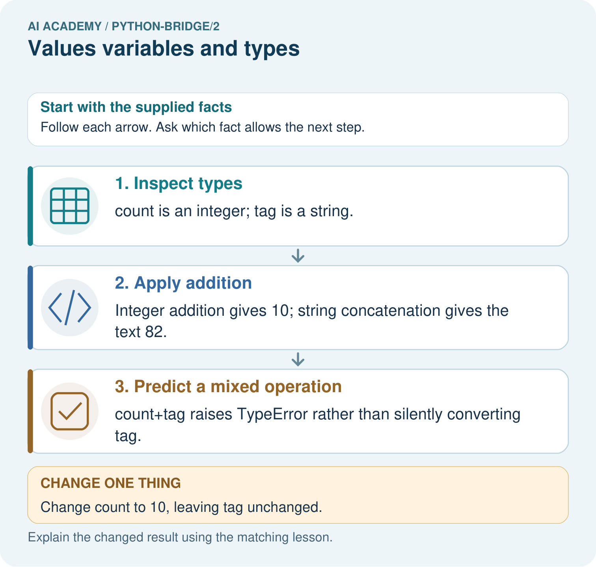
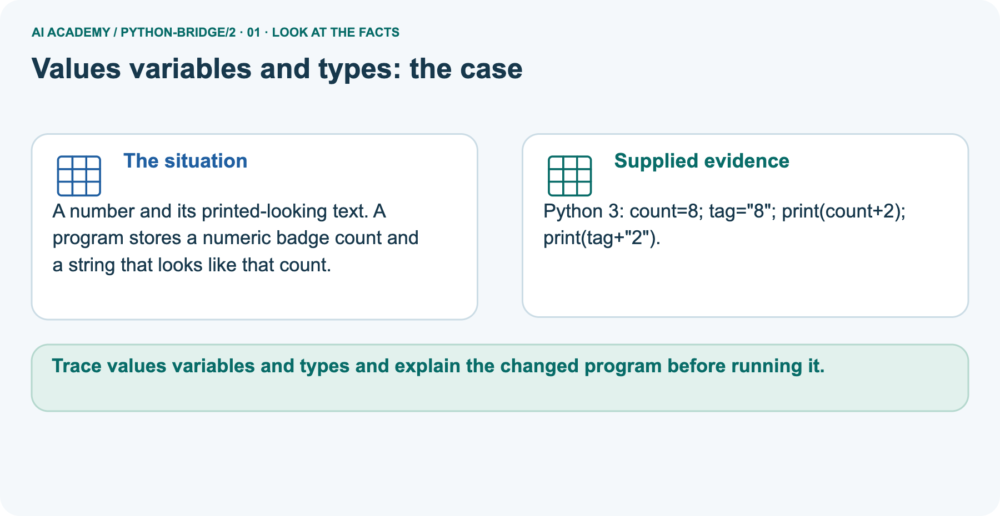
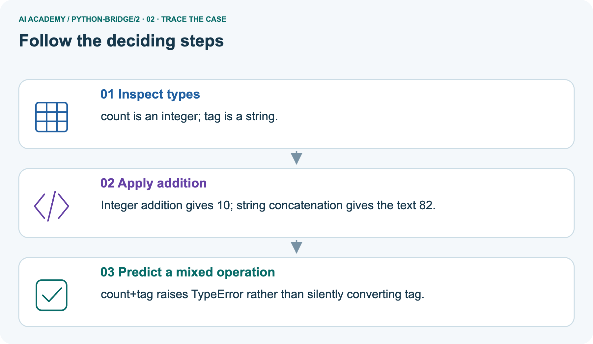
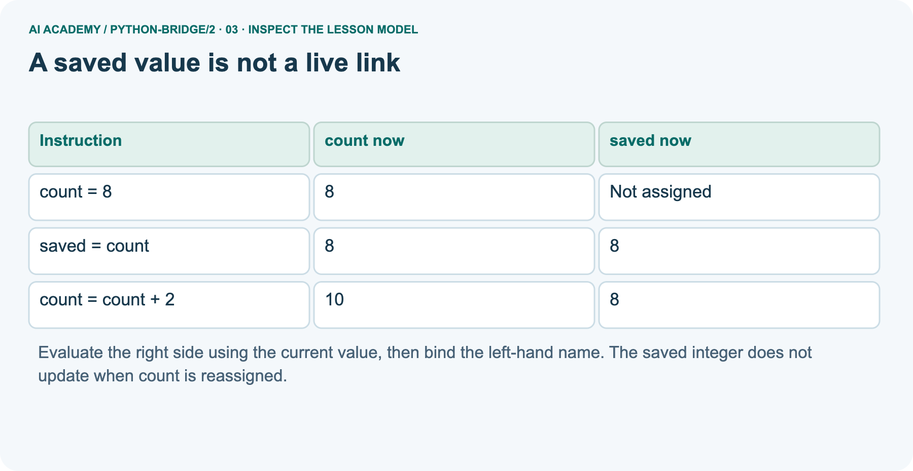
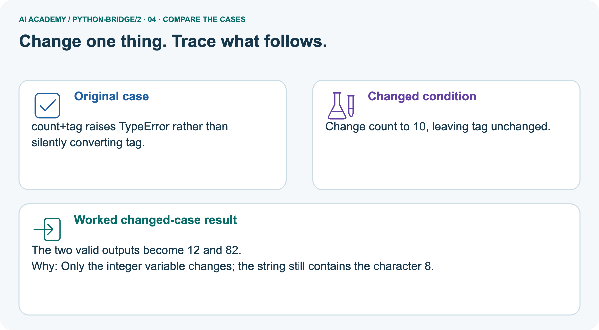
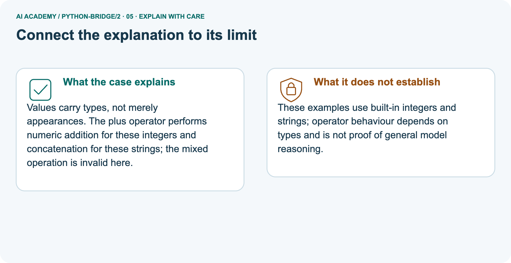
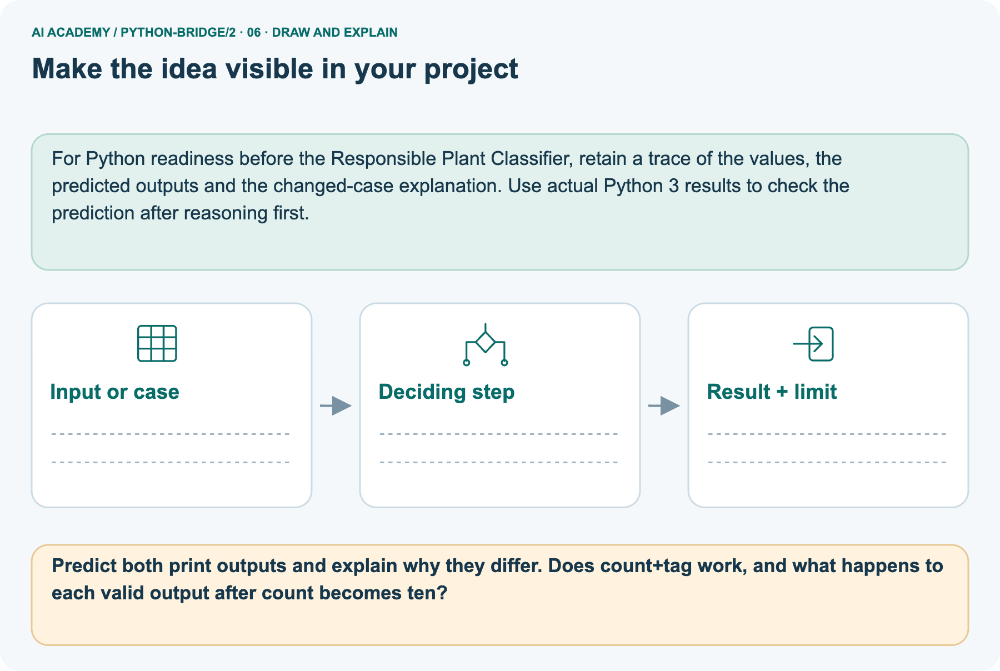

AI Academy · Python readiness bridge · Workbook
Values variables and types
Learn to understand, design, build, test and explain AI systems responsibly.
Project: Python readiness portfolio
Workbook · 1 of 15
Recall and choose your starting point
Record your starting explanation for Values variables and types before opening notes. Show any later correction separately.
Try the recall before opening notes. Then use a different colour or a labelled second line to correct your explanation.
From a paper algorithm to Python
Without opening the old lesson, explain one key idea from From a paper algorithm to Python. Give an example and a mistake that the idea helps you avoid.
Workbook · 2 of 15
Practise with fading help
Complete the supported Values variables and types trace and record the first step you can explain without help.
Use W2: Trace a saved value for Values variables and types. Record the answer once; the lesson and workbook refer to the same attempt.
| Given inputs | Procedure I chose | Middle steps | Result and check |
|---|---|---|---|
Workbook · 3 of 15
Individual reasoning check
Check the proposed Values variables and types explanation against the supplied facts before discussing it.
Use the worked case for Values variables and types. Proposed explanation: “Digits always mean a number”. Decide whether this explanation is supported.
Point to the step or supplied fact that decides; explain your repair if needed.
Workbook · 4 of 15
Independent transfer case
Write one first attempt at the reserved independent case before feedback. Repeated copies of that case refer to the same recorded attempt.
Independent case: Trace values, types and reassignment
Predict both output lines and explain why estimate stays unchanged when count is reassigned. Repeat the trace with initial count=0. Explain why note is text even though its printed characters look like a number.
count = 4
note = "4"
estimate = count / 2
fits = count <= 5
count = count + 3
print(count, note, estimate, fits)
print(type(count).__name__, type(note).__name__, type(estimate).__name__, type(fits).__name__)
Attempt this case before feedback. Record any help. Earlier examples below are further practice; a case already practised with feedback cannot establish fresh transfer.
Workbook · 5 of 15
W1 Identify the value and its type
Identify the value and its type. Apply the supplied Values variables and types facts and keep your reasoning.
Classify 12, 1.5, "12", False and "False". Explain why the last two are different.
Workbook · 6 of 15
W2 Trace a saved value
Trace a saved value. Apply the supplied Values variables and types facts and keep your reasoning.
Where to find the supplied example
Reference for this exercise: open this week’s student lesson, “Values variables and types”, at “See how it works” and “Follow a worked example”. Use the original worked values or code named in the question; the later pictorial case is a separate example. Keep this reference beside your workbook while practising.
Trace the five-line count and saved program. Record both printed outputs, then predict the result of assigning saved = count after the change. Check with a run or label a paper trace.
Workbook · 7 of 15
W3 Diagnose the operation
Diagnose the operation. Apply the supplied Values variables and types facts and keep your reasoning.
Predict 6 + 3, "6" + "3" and "6" * 3. Explain what happens for "6" + 3. Which expression counts six groups of three?
Workbook · 8 of 15
W4 Trace a new pair of names independently
Attempt before feedback. If this repeats the selected independent case, reuse that first attempt; otherwise keep a separate record. Trace a new pair of names independently. Apply the supplied Values variables and types facts and keep your reasoning.
A fresh script runs seats = 12; booked = seats; seats = seats - 5; print(seats); print(booked), with each statement on a separate line. Predict both outputs. Then add booked = seats + 1 and print(booked).
Explain the evaluation order and choose a type for a seat label "07".
Workbook · 9 of 15
W5 Separate type from validity
Separate type from validity. Apply the supplied Values variables and types facts and keep your reasoning.
Give a suitable type for a counter count, a length of 2.5 metres, a shelf ID with a leading zero, and a yes-or-no availability flag. Give a count value with the right type that should still be rejected.
Workbook · 10 of 15
Project checkpoint and reflection
Connect Values variables and types to Python readiness portfolio, identify a limit and choose the next useful test.
Add a labelled values variables and types evidence sheet to Python readiness portfolio. Show how you can distinguish integer, floating-point, text and boolean values.
Use the supplied fictional case and keep its inputs, intermediate steps, calculation or prediction, and limitation. Connect this record to last week’s record; a matching answer without a trace is insufficient.
Workbook · 11 of 15
Feedback, return check and learning record
Record the first repaired step and a different case to revisit after a delay.
| Evidence | My record |
|---|---|
| Worked alone / hint / model | |
| First step I repaired and why | |
| New case checked later; date and result | |
| What I can now explain without notes | |
| One remaining question |
Revisit this idea with your teacher after a delay. Familiarity is different from explaining and using it on a changed case.
Workbook · 12 of 15
Pictorial case practice: Values variables and types
A number and its printed-looking text. A program stores a numeric badge count and a string that looks like that count. Explain the labelled step before checking the changed condition.
A number and its printed-looking text. A program stores a numeric badge count and a string that looks like that count.
Python 3: count=8; tag="8"; print(count+2); print(tag+"2").

Predict both print outputs and explain why they differ. Does count+tag work, and what happens to each valid output after count becomes ten?
Record the help used
Support used: alone / hint / worked example. This record is practice evidence.
Project connection: For Python readiness before the Responsible Plant Classifier, retain a trace of the values, the predicted outputs and the changed-case explanation.
Use actual Python 3 results to check the prediction after reasoning first.
Workbook · 13 of 15
Project portfolio milestone
Keep this week’s input, deciding step, result and limit together in the Python readiness portfolio record.
Project: Python readiness portfolio
Current milestone: Python readiness portfolio. Keep runnable code, predictions, actual outputs, one repaired error and an explanation of a function on changed inputs.
For Python readiness before the Responsible Plant Classifier, retain a trace of the values, the predicted outputs and the changed-case explanation. Use actual Python 3 results to check the prediction after reasoning first.
| Evidence to keep | My record |
|---|---|
| This week’s input and deciding step | |
| Prediction and actual result (or labelled paper trace) | |
| One change since the previous checkpoint and why | |
| One error or limit and the next test |
Workbook · 14 of 15
Supported practice and learning evidence
Try the supported questions before comparing with hints and feedback. Record what you repaired and the evidence you retained.
Use this supported practice once, in the browser or on paper. Keep the reserved independent assessment for a separate first attempt before teacher feedback.
A number and its printed-looking text. A program stores a numeric badge count and a string that looks like that count.
Practice 1: explain the deciding evidence
Which labelled step matches this detail? count+tag raises TypeError rather than silently converting tag.
1. Predict a mixed operation
2. Inspect types
3. Apply addition
Hint · try first
Hint if needed: Read the steps in the pictorial case. Match the supplied detail to the stage that performs or records it.
Feedback · compare after trying
After your attempt, compare with the supported explanation: Predict a mixed operation count+tag raises TypeError rather than silently converting tag. Values carry types, not merely appearances.
The plus operator performs numeric addition for these integers and concatenation for these strings; the mixed operation is invalid here.
Practice 2: explain the deciding evidence
Changed case · predict first
Changed-case practice: Change count to 10, leaving tag unchanged. Which conclusion is supported by the supplied facts?
1. This one example guarantees correct results for every future input.
2. We can decide the result without examining the changed input or the procedure.
3. The two valid outputs become 12 and 82.
Hint · try first
Hint if needed: Use the changed condition and the deciding step in the pictorial trace. The answer must say what follows from those facts.
Feedback · compare after trying
After your attempt, compare with the supported explanation: The two valid outputs become 12 and 82. Only the integer variable changes; the string still contains the character 8.
Repair a missing building block
Review From a paper algorithm to Python (python-bridge/1). Goal: Translate a short paper calculation into a Python script. Short practice: Match each paper quantity to its Python name.
Why does the spare count get added once, and what prints when spare is five?. Return to this week and explain what you changed.
Predict, run and debug
The browser lab lets you edit the supported Python examples already included in this lesson. Predict first, run, inspect the actual output or error, change one input, then run again.
Keep code, predictions, actual results and a reasoned revision together. On paper, label your result as a trace rather than an execution.
Keep your completed work
Use Download completed work in the hosted lesson to export your answers, reflections, practice feedback and code-run evidence. Open the HTML copy to read or print it.
Drafts stay in this browser when storage is available; clear drafts on a shared device.
Workbook · 15 of 15
Visual concept journey
Explain each Values variables and types picture from its labels, then record a relevant limit.
01. Values variables and types: the case

A number and its printed-looking text. A program stores a numeric badge count and a string that looks like that count. Supplied facts: Python 3: count=8; tag="8"; print(count+2); print(tag+"2").
Point to the given fact that matters most. Explain why it matters.
02. Follow the deciding steps

Inspect types: count is an integer; tag is a string. → Apply addition: Integer addition gives 10; string concatenation gives the text 82. → Predict a mixed operation: count+tag raises TypeError rather than silently converting tag.
Point to each numbered stage and explain which recorded input it uses.
03. A saved value is not a live link

A saved value is not a live link. count = 8 | 8 | Not assigned. saved = count | 8 | 8. count = count + 2 | 10 | 8
Read the labels and values. Explain the relationship the model shows.
04. Change one thing. Trace what follows.

Original case: count+tag raises TypeError rather than silently converting tag. Changed condition: Change count to 10, leaving tag unchanged. Expected result: The two valid outputs become 12 and 82.
Reason: Only the integer variable changes; the string still contains the character 8.
Predict before checking the worked changed-case result. Name what changed and what the supplied facts allow you to conclude.
05. Connect the explanation to its limit

Values carry types, not merely appearances. The plus operator performs numeric addition for these integers and concatenation for these strings; the mixed operation is invalid here.
Limit: These examples use built-in integers and strings; operator behaviour depends on types and is not proof of general model reasoning.
Explain the case, then point to a limit on the claim.
06. Make the idea visible in your project

For Python readiness before the Responsible Plant Classifier, retain a trace of the values, the predicted outputs and the changed-case explanation. Use actual Python 3 results to check the prediction after reasoning first.
Draw your input, deciding step, result and limit. Supported question: Predict both print outputs and explain why they differ. Does count+tag work, and what happens to each valid output after count becomes ten?
Draw your project trace and justify the deciding step using evidence.